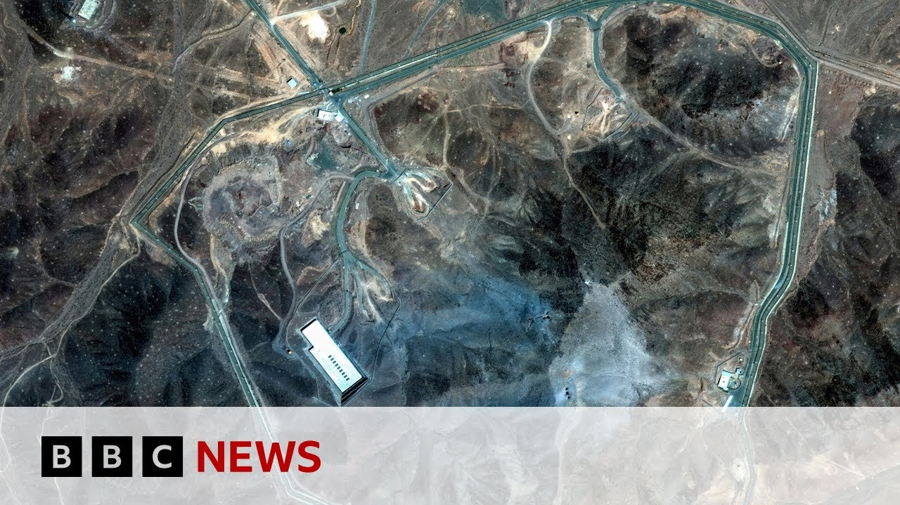

【BBC新闻：美国对伊朗核设施的袭击是如何展开的】
Summary: The US attacked three Iranian nuclear sites, but the extent of damage remains unclear. President Trump announced the strikes, claiming success, while Iran vowed retaliation, raising global concerns over escalating conflict.
摘要： 美国袭击了伊朗三处核设施，但破坏程度尚不明确。特朗普总统宣布了此次袭击，声称取得成功，而伊朗誓言报复，引发全球对冲突升级的担忧。

⏱️ Estimated Reading Time: 5 min
📚 六级生词 📚 雅思生词 📚 托福生词 📚 专八生词 📚 SAT生词 📚 考研生词 📚 GRE生词 📚 高考生词
The US hit three nuclear sites in Iran overnight, but it remains unclear where the strikes did destroy all of Iran's nuclear capabilities.
美国夜间袭击了伊朗三处核设施，但尚不清楚袭击是否彻底摧毁了伊朗的所有核能力。
This report now from our North America editor Sarah Smith.
以下是北美编辑莎拉·史密斯的报道。
Donald Trump, who promised to end foreign wars, went on live television to announce the attacks that may have just made him yet another wartime president.
曾承诺结束对外战争的唐纳德·特朗普通过电视直播宣布了此次袭击，这可能使他成为又一位战时总统。
Tonight, I can report to the world that the strikes were a spectacular military success.
今晚，我可以向全世界报告，此次袭击是一次惊人的军事成功。
Iran's key nuclear enrichment facilities have been completely and totally obliterated.
伊朗的关键核浓缩设施已被彻底摧毁。
Iran, the bully of the Middle East, must now make peace.
伊朗，这个中东的霸凌者，现在必须寻求和平。
If they do not, future attacks will be far greater and a lot easier.
如果他们不这样做，未来的袭击将更加猛烈且更容易实施。
In the White House situation room with his top security officials, President Trump making the final decision to attack had to calculate what the consequences might be.
在白宫战情室与高级安全官员一起，特朗普总统在做出攻击的最终决定时不得不考虑可能的后果。
Will air strikes against Iran's nuclear sites result in attacks on US forces that could start a fullscale war.
对伊朗核设施的空中打击是否会导致对美国军队的袭击，从而引发全面战争。
In these pictures from Istan, you can see and hear the air strikes hitting one of the three nuclear sites attacked.
在这些来自伊斯塔的图片中，你可以看到并听到空袭击中三个核设施中的一个。
Iran obviously knew this was a possibility, but may not have been expecting it so soon.
伊朗显然知道这种可能性，但可能没有预料到会这么快发生。
President Trump had said he would take up to two weeks to decide whether to take military action.
特朗普总统曾表示，他将花费两周时间决定是否采取军事行动。
At the Pentagon, they want to say this operation is already over.
在五角大楼，他们希望表示此次行动已经结束。
Iran should not respond.
伊朗不应回应。
The operation President Trump planned was bold and it was brilliant, showing the world that American deterrence is back.
特朗普总统策划的行动大胆而卓越，向世界表明美国的威慑力已经回归。
When this president speaks, the world should listen.
当这位总统发言时，世界应该倾听。
This Pentagon map shows war plananes taking off from Missouri in the American heartland and flying a 40-hour round trip to deliver their enormous munitions, 14 bunker buster bombs.
这张五角大楼的地图显示，轰炸机从美国腹地的密苏里州起飞，经过40小时的往返飞行，投送了14枚巨型钻地炸弹。
What damage did they do?
它们造成了什么破坏？
These satellite photographs show the underground nuclear site at Fordo before and then after the air strikes.
这些卫星照片显示了福尔多地下核设施在空袭前后的对比。
The B2 bombers totally obliterated the site claimed Donald Trump.
特朗普声称，B2轰炸机彻底摧毁了该设施。
The US military haven't actually made a final assessment, but say the facility has been severely damaged, not destroyed.
美军尚未做出最终评估，但表示该设施已严重受损，但未被摧毁。
Iran has said it will respond in self-defense.
伊朗表示将进行自卫反击。
It hasn't said how.
但未说明具体方式。
It is an outrageous, grave, and unprecedented violation of the fundamental principles of the charter of the United Nations and international law.
这是对联合国宪章和国际法基本原则的公然、严重且前所未有的违反。
The wararmongering and lawless administration in Washington is solely and fully responsible for the dangerous consequences and far-reaching implement implications of its act of aggression.
华盛顿的好战且无法无天的政府对其侵略行为的危险后果和深远影响负有全部责任。
World leaders have hastily convened crisis meetings in international capitals, aware that a growing conflict would affect them all.
世界各国领导人匆忙在国际首都召开危机会议，意识到不断升级的冲突将影响所有人。
The UN Security Council is in emergency session, deeply concerned about military escalation in the Middle East.
联合国安理会正在召开紧急会议，对中东军事升级深表关切。
The people of the region cannot endure another cycle of destruction.
该地区的人民无法承受另一轮破坏。
And yet we now risk descending into a hole of retaliation after retaliation.
然而，我们现在正面临报复与反报复的恶性循环风险。
The US Congress was not consulted before the strikes.
美国国会在袭击前未被征询意见。
The president can take limited military actions without it.
总统可以在未经国会批准的情况下采取有限的军事行动。
Only Congress can authorize going to war.
只有国会才能授权发动战争。
Democrats claim Mr. Trump has acted unconstitutionally.
民主党人声称特朗普的行为违宪。
This is the US jumping into a war of choice at Donald Trump's urging uh without any compelling national security interest for the United States to act in this way, particularly without a debate and vote in Congress.
这是美国在特朗普的鼓动下跳入一场选择性战争，而美国没有任何迫切的国家安全利益需要以这种方式行动，尤其是在未经国会辩论和投票的情况下。
As these B2 bombers are seen returning to their American base, their commanders don't know if they have undertaken a specific limited mission or started a war.
当这些B2轰炸机返回美国基地时，指挥官们不知道他们是否执行了一次特定的有限任务，还是发动了一场战争。
How will Iran retaliate for these air strikes?
伊朗将如何报复这些空袭？
And what will the US do then?
而美国又将如何应对？
This is a delicate and dangerous moment in the Middle East and around the world.
这是中东乃至全世界微妙而危险的时刻。